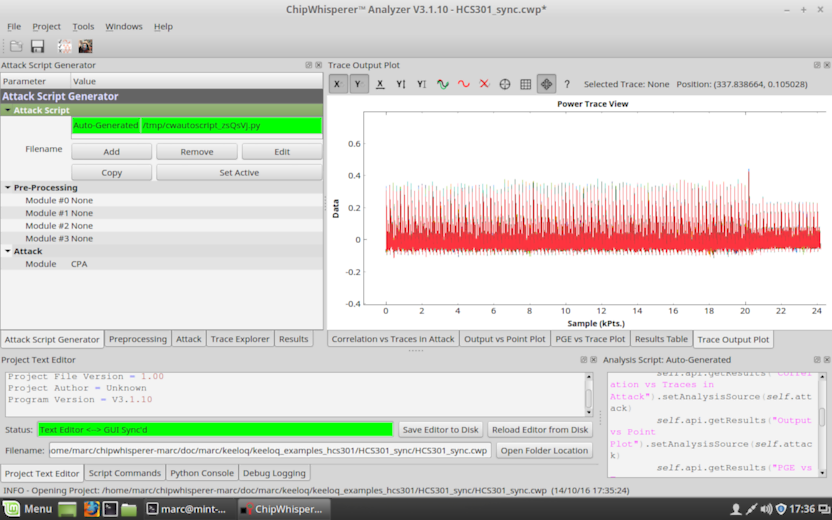
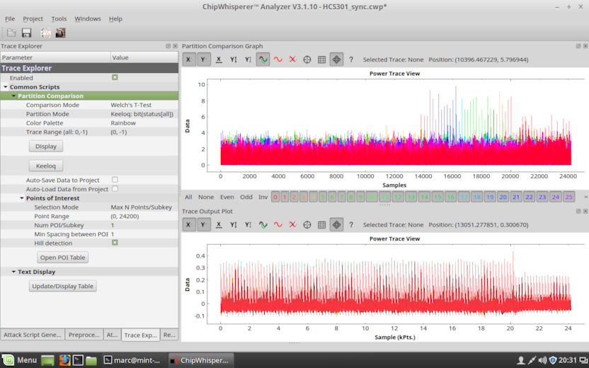
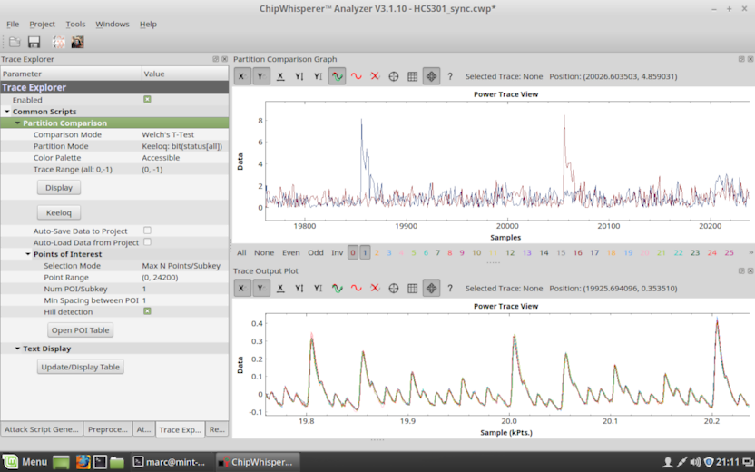
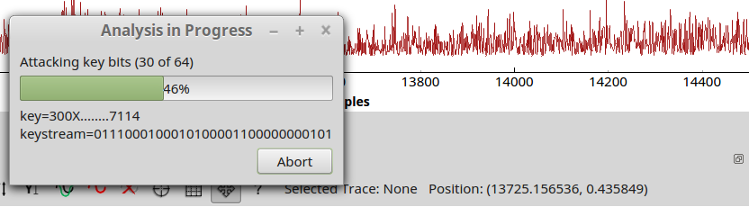

The bit model attack is simple but works very well against the (cheap & robust) HCS301 encoder chip. Note that the Keeloq algorithm itself is bit-based too.
Covers:
You will need at least 200-300 annotated power captures of an encoder chip. If you don't have any, you can use one of the following example traces:
No fancy preprocessing other than sychronization. This is sub-optimal for attacking, because there is a lot of irrelevant data which can mask the good data. For learning however, these traces are better suited and will give you much better insight.
Easier to work with. Much of the irrelevant noise has been removed already and rounds are easily distinguished during visual inspection.
Best for attacking. The bit leakage is condensed into single peaks, there are no distractions.
Download and uncompress the example traces, or get your own traces ready.
Run CWAnalyzer and open one of the projects with the traces.
Find the Trace Output Plot dock on the right-hand side, and select the Trace Output Plot tab. You will now see the trace waveform.

Exercise:
Tips:
Enable Move mode (right-most icon above the plot), so you can grab and pan the plot with the left button. The right button zooms: click and hold, and move the mouse.
On the left-hand side, in the Results tab, way down, is an item Trace Output Plot and Trace Range. Here you can specify which range of traces you want to see (default: 0-7). Click redraw to update the display.
If you're lazy and just want to try the automatic mode, skip to 'Step 5: Automatic key recovery'
Or, continue reading and look where ciphertext leaks:
The ciphertext is produced in the last 32 rounds of the encryption process, and is 32 bits wide. The ciphertext is known, because it is part of the encoded RF message. Make sure that your traces contain correct ciphertext data (the example traces do).
Select the Trace Explorer tab (on left-hand side). Click enabled if it isn't already clicked, to see the configuration parameters.
Configure
then click Display to run the partition algorithm. A new dock Partition Comparison Graph will open and show the ciphertext leakage.
You can re-arrange the plot dock windows, and close unnecessary ones to gain screen estate (use the Windows menu to get them back later). For example like this:

Screenshot: Ciphertext leakage (top) versus power trace (bottom)
A rainbow-colored group of peaks is clearly visible, starting after point 14000. Each color represents a different bit of the 32-bit ciphertext (see legend below the plot).
Exercises:
Zoom in to inspect shape and width of the peaks, and the spacing in between. The latter is equivalent to the round timing (the algorithm produces one bit per round).
Use the legend to enable and disable single bits (by clicking). Find out in which order the chip calculates the bits.
Align the leakage plot with the power trace plot and determine which portion of the waveform leaks information about the ciphertext.
Identify where bit 31 of the ciphertext leaks. Why are there many peaks? Which one is the 'correct' one? Find my guess in the footnote¹.
It may be impossible to toggle bit 31 on narrow displays (legend is cut off midway, like in the screenshot above). If this happens to you, you have two remedies: Either maximize CWAnalyzer and the Partition Comparison Graph dock to uncover as many buttons as possible. Or, change Partition Mode to Keeloq: bit(status[msb]) and then click Display to show only bit 31.
Tips:
Dial Alpha down a bit (right-click inside the plot to get the context menu, then Plot Options and Alpha) to blend many traces into a more meaningful display.
Use different Color Palette choices (in Trace Explorer configuration parameters), depending on what information you are looking for. Click Display to update the plot.

Screenshot: Ciphertext bits 1 (blue) and 0 (red) versus power trace (bottom)
Ciphertext bit 31 is of particular interest, because it is the earliest known bit. Every leaked bit preceeding bit 31 is an internal state bit, and reveals one key bit.
Select the Trace Explorer tab and configure
Then click Display.
Zoom and pan the plot so that bit 31 is at the right, and at least 3 more rounds are visible on the left. For HCS301 sync that would be range 13200-14000.
Select the Attack Script Generator tab (left-hand side), then set
Select the Attack tab to see the configuration parameters for Keeloq. Find the Analysis Options (for Partition modes) area and set
This instructs the Keeloq partition mode to undo the last round of encryption, using 0 as key bit.
Return to the Trace Explorer tab and click Display.
Note how the peak jumps one round to the left. You are looking at leakage produced by the internal state.
Repeat the above for Known keystream values of 0, 1, 00, 01, 10, and 11. Write down where you have found the peak for each keystream (some results will not have a peak).
About the Known keystream parameter:
The keystream bits are applied from left to right in decrypt operations. Every bit undoes one round, setting the internal status register to what it was in the previous round. You are looking at the MSB of status in round 528 - sizeof(keystream).
Only 0 and 1 characters are used as key bits, everything else is ignored.
Exercises:
Look at your results and think about what they mean. The solution is found below in the next step.
Optional: Repeat with 3 keystream bits 000, 001, 010, 011, 100, 101, 110, 111.
For HCS301 sync you probably have found this:
| Key | Peak pos | Round | Notes | |-----|--------------|-------|---------| | | ..........X. | 497 | | | 0 | .......X.... | 496 | | | 1 | .......X.... | 496 | | | 00 | ....X....... | 495 | | | 01 | ....X....... | 495 | | | 10 | ............ | 495 | | | 11 | ............ | 495 | | | 000 | ............ | 494 | | | 001 | ............ | 494 | | | 010 | .X.......... | 494 | | | 011 | .X.......... | 494 | | | 100 | .x.......... | 494 | unclear | | 101 | .x.......... | 494 | unclear | | 110 | .x.......... | 494 | unclear | | 111 | .x.......... | 494 | unclear |
0 and 1 have a peak. 00 and 01 also have one. 10 and 11 have none (forming a pair too).
Exercise:
You'll find that there is no difference at all between pairs that share all bits except the LSB.
This is caused by an interaction between (bit-based) Keeloq and T-Test with 2 partitions. The key bit is mixed into the attacked bit with a linear operation (XOR). The partitioning mode thus creates the same two groups of traces, just swapped around depending on the bit value. The absolute differences between them will always be the same. Think distance from A to B, versus B to A. The effect disappears when more keystream bits are used, thanks to the non-linear behavior of Keeloq (NLF).
Tip:
Update your table, ignoring the last bit:
| Key | Peak pos | Round | Notes | |-----|--------------|-------|---------| | | ..........X. | 497 | | | x | .......X.... | 496 | | | 0x | ....X....... | 495 | | | 1x | ............ | 495 | | | 00x | ............ | 494 | | | 01x | .X.......... | 494 | | | 10x | .x.......... | 494 | unclear | | 11x | .x.......... | 494 | unclear |
1x shows no peak, while its partner 0x does. This suggests that 0x correlates with the measured behavior of the chip, and models it correctly to a high degree. 1x does not correlate, it has nothing in common with this chip.
The first recovered keystream bit seems to be a 0. Congratulations!
Now look at 00x vs its partner 01x. 00x does not correlate, while 01x does.
Ignoring the unclear results of 10x and 11x for a moment, the 2nd keystream bit would be a 1.
There are 'weak' peaks for 10x and 11x. Neither are very clear, and they are incompatible with the previous findings.
Power analysis is about choosing the most likely outcome. If we had accepted 0x as correct from the start, we'd never have calculated results at 1Xx. The question is how deep to explore the tree of options before accepting something as correct (think: chess program analysis depth).
Possible interpretations of the unclear results:
Optimistic: A unclear decision at this branch means that neither choice models the chip better than the other. We must have lost track earlier (before reaching this branch), and can stop here.
Pessimistic: Noise could have affected the quality at this branch. We should explore deeper below it to clarify.
Exercise:
Tips:
Keeloq is not very non-linear. Even wrong paths can correlate at times, especially when you use few traces.
Noisy or weak results in a round for all tested keystreams? Maybe there was noise at this point of time, for example from another component operating in parallel. Sometimes you can see such noise in the Power Trace View.
Identify the noisy point range, and skip over it by inserting all possible values for the affected round(s). The correlation behavior past the noise helps you get back on track.
Enhance the readability of your keystream by adding whitespace, questionmarks, and other notes in the Known keystream field. Everything but 0 and 1 is ignored.
Select the Attack Script Generator tab (left-hand side), then set
Click the Attack icon (in the tool bar above) to run the script.

Screenshot: Progress dialog with current key guess
Once the script is over, the result is visible in the Debug Logging dock. Use the Windows menu to make it visible, if you have closed it before.
The final key guess is printed in one of the last lines. Also, it is used to decrypt the ciphertexts of all traces. For sequential captures, the resulting plaintexts should follow the expected pattern, otherwise the key guess is not correct.
The current implementation is very simple. It follows the highest peak at each junction, and never tracks back.
The highest peak is selected either from the whole trace (or rather the configured point range). Or, if round timing is given, the detection can be limited to just the range of each round. The latter works with fewer traces.
Round timing can be specified below Timing Setup (in the Attack tab). In step 2 you have already learned how to recover round timing. For the HCS301 sync example traces, configure
then enable Utilize round timing (at the bottom).
Exercises:
Run the script with fewer traces (below Trace Setup: Starting trace and Traces per attack) and find the minimum number of traces for successful key recovery.
Compare the minimum number with and without using round timing.
Try the HCS301 bits peak example traces.
¹ Ciphertext bit 31 has many leakage peaks:
The correct peak is the one that fits nicely into the pattern of the other bits. The group defines the round timing. Bit 31 is the earliest bit produced by the chip, therefore it is to the left of bit 30. To the right of bit 0 (the last bit produced), the algorithm is over and additional peaks are meaningless.
In the HCS301 sync example, the good peak is at 13855-13865.
The extra peaks after 20200 are side-effects of the particular hardware implementation. Probably the core is clocked for some more time to complete internal cleanup. For example, to transfer the ciphertext out to the next processing stage, to re-align the key register for the next encryption, etc.
Document author: marc - Document version: 22-Oct-2016 - Fork README - Keeloq README